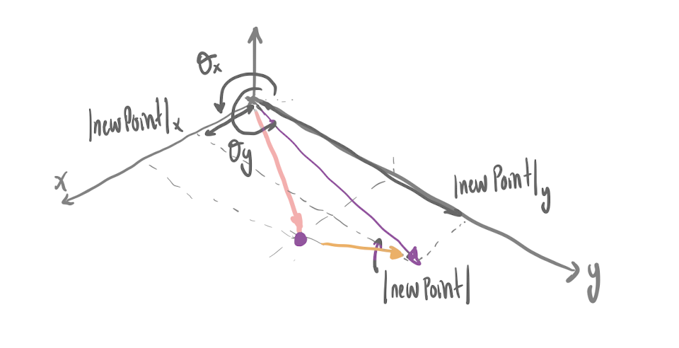
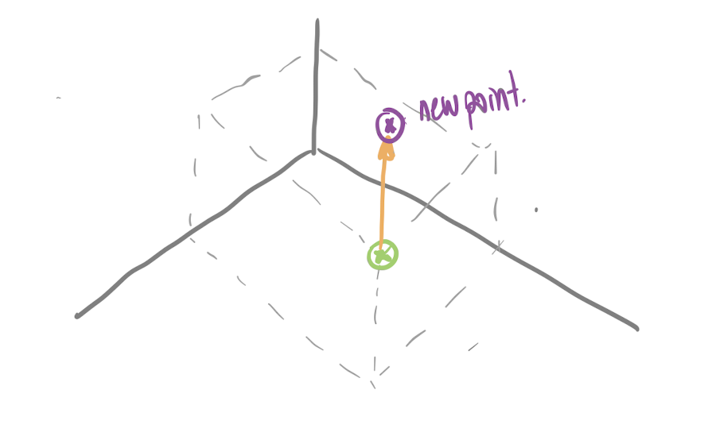
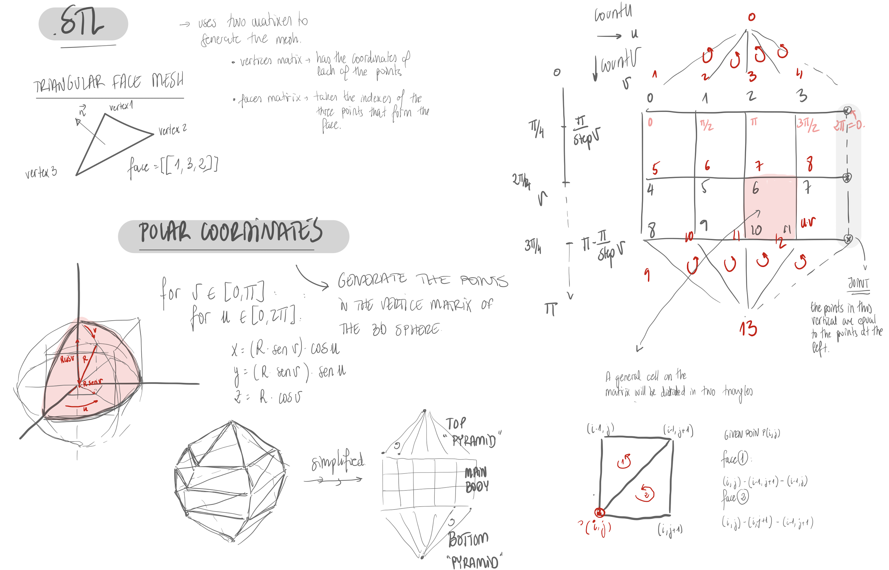

15.112- 3D modelling
WHEN? Fall 2021
WHO? Tomás Cabezón
WHY? 15-112: Fundamentals of Programming and Computer
Science
WHERE? CMU

For the 15-112 course, Fundamentals of Computing Science, we were asked to design and
implement a program of our choosing. This was an open project to put into practice what we had learned
during the course. I had no doubts about what I wanted to do. A 3D modeling program! I remember talking
with the teaching assistant about this idea and she suggesting that it was a very ambitious project and
that I should have a backup plan in case I wasn’t able to develop it. That warning only motivated me to
go for it. As a designer and engineer, I am aware of the difference that CAD (Computer Aided Design)
programs have in any design process, a tool that is nowadays fundamental for any project, I wonder what
they would do at any design or engineering company without their computational tools.
Every part of this project is developed from scratch using basic python functions. Only mumpy library
was imported to help with the matrix operations and for the GUI, cmu 112 graphics package was used,
based on Tkinter library for python.
To generate the 3D objects, the vertices and faces that generate the object need to be defined. To
preview the objects in the program, the object was converted from 3D to a 2D isometric view. The changes
made by the user in the screen, 2D space, are then converted into 3D.
For this part of the project apart from the isometric graphic functions, the following functions were
also developed:
- Rotation of object with user dragging
- Basic mesh editing (clicking/dragging vertices around)
Rotation of object
For user rotation, either dragging or by keyboard, a rotation matrix
was used. The matrix of a rotation of the points by an angle θ around the axis given by the
unit vector u = (ux, uy, uz) is given by:
Basic mesh editing
Two different ways of editing the mesh were developed. As the user interacts with a 2D screen, it is not possible to define the 3D position of a vertix that is being moved. Therefore, two different modes of editing were developed.
- XY plane
When the user drags a vertex in this mode, the z coordinate is
fixed, so the point is moved in the XY plane. The equations used to calcultate the new
3D coordinates of the point are the following.

- Z plane
When the user drags a vertex in this mode, the X and Y
coordinates are fixed, so the point is only moved vertically. This means that the
only 3D coordinate that will change will be Z. The equation used to calcultate the
new coordinates of the point is the following.

Spheres and Bezier
Once programmed some basic functions, some algorithms to generate 3D objects were developed, spheres and bezier 3D objects. Both of them were generated by rotating a 2D shape along an axis.
- Sphere
To generate the sphere, a semisphere is rotated along the Z axis. The
number of subdivisions of this curve if given by the parameter stepU. The number of subdivisions
in the rotation process is given by the stepV parameter. In the following images the influence
of these two parameters as well as the explanation of how the algorithm was developed can be
seen.

- Bezier
To generate the 3D bezier object, the same rotation algorithm as in the spheres was used. However, the initial shape used, instead of a semisphere, it is a Bezier Curve. To generate this curve the user can define the control points of the curve and see the generated shape. To implement this function, and generate the bezier curve, De Casteljau’s algorithm was used. In the following images, the interaction between the program and the user can be seen as well as the explanation of how the recursive algorithm for implementing the bezier curves.
The different algorithms and functions implemented for this project were later used for the hnx.py project.